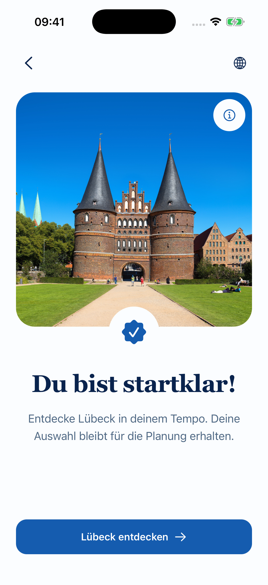

Screen 08: confirmation that continues planning
Keep the approved UI. Ask interests once. Remove the mandatory second City Hub visit. Existing routes, one controller, optional account and location.
Full source-linked specification, Back table and missing states
Entry remains guest-first
/ Home → city selection → /city/:citySlug Hub → Build My Walk → /city/:citySlug/walk hydrate. Optional /welcome → /introduction → /account?onboarding=1 has guest exits to /?section=cities. No launch rewrite is proposed.
OLD vs PROPOSED
OLD · current implemented flow
APPROVED UX/FLOW · not implemented
Secondary Explore {city} is still available: deliberately browse Hub, then resume the exact retained draft if its stack/city identity is valid. It is no longer mandatory.
Full comparison
| Point | OLD | PROPOSED |
|---|---|---|
| App launch / guest entry | Normal launch is / (Home). /welcome is an explicit review/deep-link/fallback entry; /introduction Next opens optional /account?onboarding=1. Explore Cities exits to /?section=cities. | Unchanged. No forced authentication, new launch gate or automatic eight-screen wizard. D01 launch policy stays pending. |
| City selection | HomeScreen / HomeCityCard opens /city/[citySlug] for an available city; unavailable cities are disabled. | Unchanged. Selected city is route context, never a global Lübeck default. |
| Build My Walk | CityScreen links /city/[citySlug]/walk; WalkScreen loads real city data and NativeWalkFlow hydrates current/saved state first. | Same route/data/controller. Existing journey restoration has priority over new-draft introductory states. |
| Interests / time | 05 uses controller interests; Continue or Skip → 06. AvailableTime sets minutes; ReturnByTimePicker sets returnBy. Time Skip keeps current/default minutes. | Same existing S05/S06 UI and Skip semantics. No second mandatory interests grid later. Do not auto-save per-walk minutes as account defaults. |
| Optional location | 07 requests only on explicit Use my location. Success → 08; Not now → 08; denied/error remains recoverable and can use Not now. | Same permission handler and manual fallback. No automatic request on 08, no GPS requirement. |
| 08 completion | FirstExperience onExplore sets firstExperienceComplete and pushes /city/[citySlug]?returnToPlanner=1. No route has been generated. | Retain confirmation UI. Proposed primary Continue planning advances same mounted controller directly to remaining constraints. Completion means settings-entry handoff only, not route creation or walk completion. |
| Continue planning | Second Hub Build goes router.back when a back stack exists; legacy step 2 repeats interests, then step 3 asks start/finish. | No mandatory Hub push on primary, and no unconditional legacy interests step. Preserve walking pace/category tags alongside existing start/end/loop controls. Owner must approve their placement. |
| Optional browsing | Only primary 08 action sends user out to Hub. | Explicit secondary Explore {city} keeps city browsing available. Only this voluntary branch visits Hub; Build resumes a verified retained draft if one exists. |
| Build / Start | Remaining constraints → explicit Build → custom /walk preview; explicit Start begins custom execution. | Unchanged separation. S08 never calls generation/persistCurrentWalk/start. Published Screen 13 is a different route/domain and is not this custom preview. |
| Back / drafts | 08 Back clears location-entry completion; step-based Back from legacy step 3 returns to repeated interests. Mounted state can survive the Hub detour; no unbuilt draft storage. | Explicit Back transitions: constraints → 08 → 07 → 06 → 05 → valid origin/selected-city Hub. Retain values while mounted. Process-death restoration of unbuilt drafts is NOT promised. |
| Existing walk | CurrentWalk restores preview/active phase. Explicit saved route opens via saved/source params and reopenSavedWalk to a new preview session. | Preserve both behaviors and bypass 05–08. No current walk is cleared/rebuilt merely to display 08. New-walk/rebuild remains explicit and separately confirmed. |
Back and restoration
Constraints → 08 → 07 → 06 → 05 → valid origin / selected-city Hub. Explicit Edit Interests returns directly to constraints. Keep mounted values; do not request permission or start a route on Back.
Unbuilt draft retention is session-only. Cold restart restores a real CurrentWalk if present; otherwise new draft. A returnToPlanner URL or canGoBack alone does not prove a matching draft exists. Saved replay and current resume remain distinct.
Missing states / technical gates
- FirstExperience has onBack/onExplore only: planning callback, second action and EN/DE copy are proposed interface changes.
- Recompose retained walking/tags/start/end without losing old controls; explicit Back/edit continuation state is required.
- Validate retained planner identity before Hub Back; handle stale stack, city switch and repeated taps.
- Define storage/content recovery separately from genuinely no walk; invalid records are not a safe overwrite signal.
- Keep return-by future-today validation after browsing; no invented tomorrow/car/transit calculation.
- Large-text/small-device footer, Android Back and assistive technology acceptance are not verified for the proposed UI.
Approved current UI reference
This screenshot shows the existing primary action. Proposed actions below are specifications, not rendered or implemented UI.

Proposed primary: Continue planning / Planung fortsetzen.
Proposed secondary: Explore {city} / {city} entdecken.
Owner flow approval recorded — implementation still unauthorized
- Direct planning primary, preserving Screen 08 UI.
- Optional city-browsing secondary with validated draft return.
- One interests entry, preserved constraints and explicit Back/edit behavior.
- Session-only unbuilt draft scope; unchanged current/saved semantics.
Owner approved this UX/flow on 28 October 2026. Technical/test and device acceptance remain pending; implementation is not authorized. D01–D14 and Screen 14 remain pending. No application code, deletion, commit, merge or deployment.
Read the exact contracts and acceptance cases